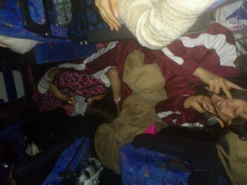

ほいっ! ろってぃーでぇ〜す^ ^
昨日は 名古屋で 全握でした♪
まひろにとって
ライブも握手会も最高に幸せな時間でしたω
でも、ほんっとに寒かったですよねぇ＾ω＾
握手会の時
『寒いぃww><』ゆうて
すごい寒そうな顔して
来てくださる人ばっかで
本間にこんな寒い中、
自分達のために
会いにきてもらっているんだなあ(TT)と思いました。
本当に嬉しかったです=^ω^=
楽しい時間をありがとう(*＾＾*)
昨日これなかった人達にも
早く会いたいです〃ω〃
待ってますね＾＾
で、面白い光景を撮ったので、
貼りますω・#笑っ
夜中のバス。
乃木メン全員で乗ってきゅうきゅうでした♪...
畠中せいらと永島せいらりん。

まさかこんな感じで
名古屋までやってきたとは
思わなかったでしょう>ω<？
夜ご飯は皆で味噌カツでした♪
むっちゃ美味しくて
食べながら 癒されました(⌒‐⌒)
ではっ、^^))
今から次更新する
コメント返しの記事
うっていこうかなっω・♪
またねっ=・ω・=のし。